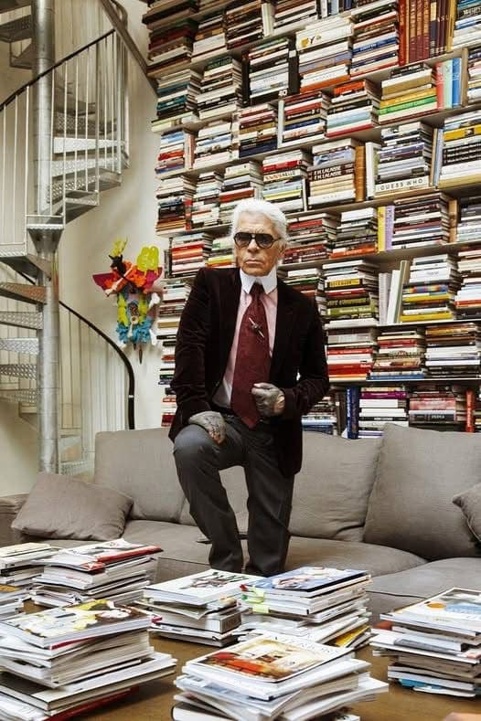

В личной библиотеке известного модельера насчитывалось около 300 000 различных изданий. Среди них была литература на разных языках — английском, немецком, французском. Чтение было одним из главных увлечений великого кутюрье, вся его парижская квартира была заполнена книгами. Многие из них он читал на языке оригинала, владея немецким, французским, итальянским и английским языками.
Каждый день кутюрье старался находить несколько часов для чтения. "Книги — это наркотики в твердых переплетах. Я счастливый книжный наркоман", — признавался Карл.